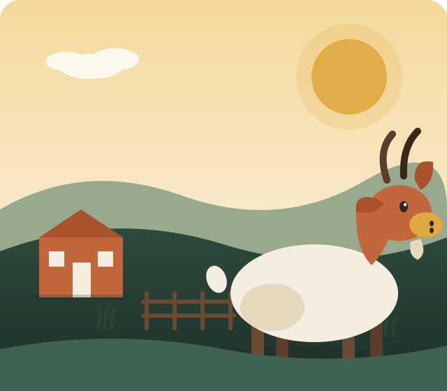
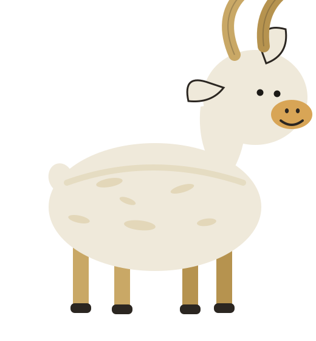
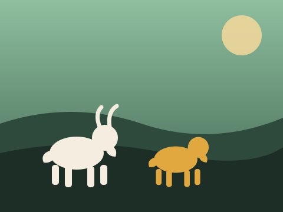
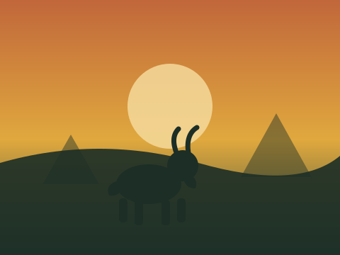

A Simple Feeding Schedule For Healthy Goats
What we feed our herd across the seasons, and why hay quality matters more than quantity.
Read articleFrom rolling pasture to your table — Goat Hub raises pasture-fed dairy and meat goats with old-fashioned care, modern welfare standards, and a whole lot of patience.


What began in 1998 as two Nubian does and a borrowed field is now 120 acres of managed pasture, a licensed dairy parlor, and a herd of over 300 goats. We still do things the slow way — rotational grazing, hand-raised kids, and a vet on speed dial — because that's what good goats deserve.
From fresh dairy to breeding stock and hands-on education, our services are built around one herd, raised right.
Fresh goat milk, small-batch cheese, and probiotic-rich yogurt from our licensed dairy parlor — sold at the farm store weekly.
Learn moreRegistered Boer, Nubian, Saanen and Alpine breeding stock with full pedigree records and health guarantees.
Learn morePasture-finished chevon by the cut or whole/half animal, USDA processed and ready for pickup or delivery.
Learn moreHand-sheared Angora mohair and raw fleece, sold washed or raw, plus custom fiber processing on request.
Learn moreGuided herd walks, kid-goat cuddle hours, and school field trips that teach real pasture-to-plate farming.
Learn moreNew to goats? We advise small farms on fencing, nutrition, parasite management and herd health plans.
Learn moreWe keep our herd small enough to know every goat by name, and big enough to supply farms, families and restaurants across the valley.
Annual third-party audits cover space, feed, shelter and veterinary access for every animal.
Pasture is rested and rotated across 14 paddocks to keep soil, grass and goats healthy year-round.
Three generations on the same land, supplying local co-ops, dairies and butcher shops since 1998.
Blue-ribbon Boer & Nubian bloodlines at three state fairs running.
Inspected annually for space, feed and animal welfare compliance.
Every animal is tagged and logged from birth to sale, no exceptions.
Free starter consulting for anyone buying their first breeding pair from us.
Six registered breeds selected for milk yield, meat quality, fiber, and pure good temperament.

Our primary meat breed — fast growth and excellent carcass yield.
High butterfat milk with a sweet, rich flavor — our cheese-makers' favorite.
The "Holstein of goats" — heavy, consistent milk producers year-round.
Alert, athletic and hardy in every season, with steady milk supply.
Grown for luxurious mohair fiber, shorn twice a year by hand.
Low-maintenance, parasite-resistant meat goats bred for pasture life.




Rotational grazing across 120 acres, monitored daily by our herd team.
Routine vet visits, vaccination records and welfare audits kept on file.
Handled on-site at our licensed dairy, fiber room, or USDA processor.
Farm store pickup, local delivery, or shipped from our online shop.
What we feed our herd across the seasons, and why hay quality matters more than quantity.
Read article
The five daily checks that catch problems before they become emergencies.
Read article
How rotational grazing keeps our soil, grass, and goats healthier year after year.
Read article